Un metal es un material que, recién preparado, pulido o fracturado, muestra una apariencia brillante y conduce relativamente bien la electricidad y el calor. Los metales son típicamente dúctiles y maleables. Estas propiedades son el resultado del enlace metálico entre los átomos o moléculas del metal.
La ciencia de materiales define un metal como un material en el que existe un solapamiento entre la banda de valencia y la banda de conducción en su estructura electrónica (enlace metálico).2 Esto le da la capacidad de conducir fácilmente calor y electricidad (tal como el cobre) y generalmente la capacidad de reflejar la luz, lo que le da su peculiar brillo.
Dentro de los metales se encuentran los alcalinos (como el sodio) y los alcalinotérreos (como el magnesio) los cuales presentan baja densidad, son buenos conductores del calor y la electricidad, además de ser muy reactivos. También se incluyen los metales de transición (los cuales conforman la mayoría de los metales), los que se encuentran en diversos grupos y los lantánidos, actínidos y transactínidos. Teóricamente, el resto de elementos que queda por descubrir y sintetizar serían metales.
Los siguientes metales no estan incluidos en otras partes de la tabla periodica
El aluminio es un elemento químico, de símbolo Al y número atómico 13. Se trata de un metal no ferromagnético. Es el tercer elemento más común encontrado en la corteza terrestre. Los compuestos de aluminio forman el 8 % de la corteza de la tierra y se encuentran presentes en la mayoría de las rocas, de la vegetación y de los animales.
Masa atómica: 26,981539 u
Número atómico: 13
Configuración electrónica: [Ne] 3s²3p¹
Densidad: 2,7 g/cm³
Punto de fusión: 660,3 °C
Electronegatividad: 1,61
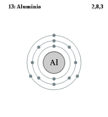El galio es un elemento químico de la tabla periódica de número atómico 31 y símbolo Ga. Descubierto por el químico francés Paul Émile Lecoq de Boisbaudran en 1875, El galio está en el grupo 13 de la tabla periódica y es similar a los otros metales del grupo como el aluminio, el indio y el talio.
Configuración electrónica: [Ar] 3d104s24p1
Número atómico: 31
Masa atómica: 69,723 u
Punto de fusión: 29,76 °C
Electronegatividad: 1,81
Descubrimiento: 1875
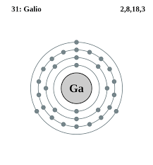El estaño es un elemento químico de símbolo Sn y número atómico 50. Está situado en el grupo 14 de la tabla periódica de los elementos. Se conocen 10 isótopos estables. Su principal mena es la casiterita.
Punto de fusión: 231,9 °C
Número atómico: 50
Masa atómica: 118,71 u
Configuración electrónica: [Kr] 4d¹⁰5s²5p²
Masa atómica: 118,71 u
Electronegatividad: 1,96
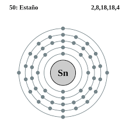El indio es un elemento químico de número atómico 49 situado en el grupo 13 y el período 5 de la tabla periódica de los elementos. Su símbolo es In. Es un metal poco abundante, maleable, fácilmente fundible, químicamente similar al aluminio y al galio, pero más parecido al zinc.
Configuración electrónica: [Kr] 4d105s25p1
Número atómico: 49
Masa atómica: 114,818 u
Radio de Van der Waals: 193 pm
Descubrimiento: 1863
Descubridor: Ferdinand Reich
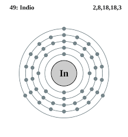El plomo es un elemento químico con el símbolo Pb y el número atómico 82. Es un metal pesado que es más denso que la mayoría de los materiales comunes. El plomo es blando y maleable, y también tiene un punto de fusión relativamente bajo.
Masa atómica: 207,2 u
Número atómico: 82
Electrones por nivel: 2,8,18,32,18,4
Configuración electrónica: [Xe] 6s²4f¹⁴5d¹⁰6p²
Punto de fusión: 327,5 °C
Radio atómico: 180 pm
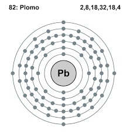El bismuto es un elemento químico de la tabla periódica cuyo símbolo es Bi, su número atómico es 83 y se encuentra en el grupo 15 del sistema periódico. Ya era conocido en la antigüedad, pero hasta mediados del siglo XVIII era confundido con el plomo, estaño y zinc.
Configuración electrónica: [Xe] 4f145d106s26p3
Número atómico: 83
Masa atómica: 208,9804 u
Punto de fusión: 271,4 °C
Descubrimiento: 1753
Descubridor: Claude François Geoffroy
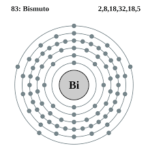El talio es un elemento químico de la tabla periódica cuyo símbolo es Tl y su número atómico es 81. Este metal del bloque p gris, blando y maleable es parecido al estaño, pero se decolora expuesto al aire.
Configuración electrónica: [Xe] 4f145d106s26p1
Número atómico: 81
Masa atómica: 204,3833 u
Radio de Van der Waals: 220 pm
Electronegatividad: 1,62
Descubrimiento: 1861
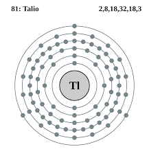El livermorio es el nombre del elemento sintético de la tabla periódica cuyo símbolo es Lv y su número atómico es 116. Su nombre viene dado en honor al Laboratorio Nacional Lawrence Livermore, en Livermore, California.
Masa atómica: 293 u
Número atómico: 116
Configuración electrónica: 5f14 6d10 7s2 7p4 (predicción)
Serie química: Metal, Anfígeno, Elementos del periodo 7
Descubrimiento: 2000
Descubridor: Instituto Central de Investigaciones Nucleares
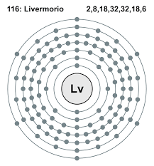El moscovio es un elemento sintético de la tabla periódica cuyo símbolo es Mc y su número atómico es 115 Actualmente se conocen cuatro isótopos desde ²⁸⁷Mc hasta ²⁹⁰Mc. Se prevé que el isótopo más estable del moscovio sea el ²⁹⁹Mc, que contiene el número mágico de 184 neutrones.
Número atómico: 115
Masa atómica: 289 u
Número CAS: 54085-64-2
Serie química: Metal, Pnictógeno, Elementos del periodo 7
Descubrimiento: 2003
Descubridor: Instituto Central de Investigaciones Nucleares
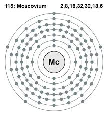El nihonio es el nombre para el elemento sintético de la tabla periódica cuyo símbolo es Nh y su número atómico es 113.
Masa atómica: 286 u
Número atómico: 113
Número CAS: 54084-70-7
Serie química: Metal, Grupo del boro, Elementos del periodo 7
Descubrimiento: 2003
Descubridor: RIKEN
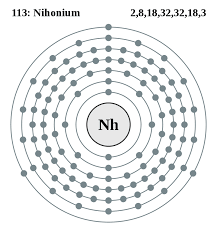Flerovio es el nombre de un elemento químico radiactivo con el símbolo Fl y número atómico 114. Nombrado en honor a Gueorgui Fliórov.
Número atómico: 114
Electrones por nivel: 2, 8, 18, 32, 32, 18, 4
Masa atómica: 289 u
Serie química: Metal, Carbonoideos, Elementos del periodo 7
Descubrimiento: diciembre de 1998
Descubridores: Sigurd Hofmann, entre otros
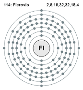